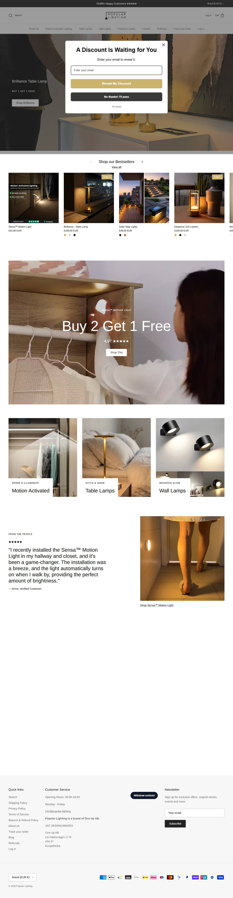
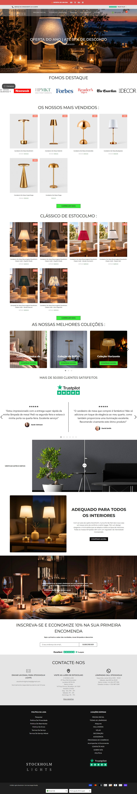
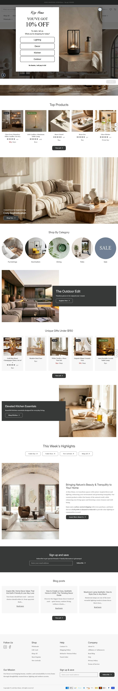
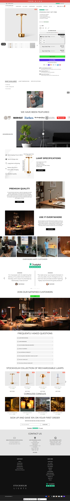
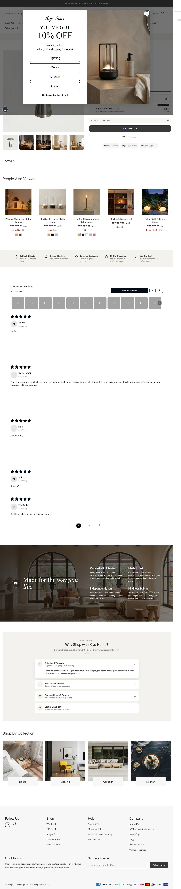

Como as lojas vencedoras se parecem, e como a sua deve ficar
Comparação das 4 lojas mais escaladas (home e página de produto) e a planta da loja Softnook.
01Por que estas 4 lojas
17.100
Popular Lighting
visitas/mês (SimilarWeb · set/2026)
observado
20.000
Stockholm-Lights
visitas/mês (SimilarWeb · set/2026)
observado
14.800
Kiyo Home
visitas/mês (SimilarWeb · set/2026)
observado
370.800
Creative.Lighting
visitas/mês (SimilarWeb · set/2026)
observado
Critério: escala medida (anúncios ativos, tráfego e avaliações) e proximidade do produto, não gosto visual. A Lightscordless ficou de fora por estar retraindo.
02Home: concorrentes x proposta
Popular LightingMODELAR

Homecopiar: par em destaque, 100 dias para devolver, avaliações reaisevitar: evitar prazo de 6 a 9 dias do exterior
Stockholm-LightsMODELAR

Homecopiar: oferta em par no topo, vídeo de pessoa comumevitar: evitar "20.000+ clients" sem prova e home pesada
Kiyo HomeMODELAR

Homecopiar: copy de contraste, horas de bateria declaradasevitar: evitar catálogo de 250 itens
Creative.LightingMODELAR

Homecopiar: nome próprio no produto, desconto ancoradoevitar: evitar preço em outra moeda e catálogo enorme
Softnook (proposta)blueprint
Oferta claramelhoria: Duo pré-selecionado, prazo de 3 a 7 dias, bateria honesta
03Página de produto: concorrentes x proposta
Popular LightingMODELAR
PDPcopiar: par em destaque, 100 dias para devolver, avaliações reaisevitar: evitar prazo de 6 a 9 dias do exterior
Stockholm-LightsMODELAR

PDPcopiar: oferta em par no topo, vídeo de pessoa comumevitar: evitar "20.000+ clients" sem prova e home pesada
Kiyo HomeMODELAR

PDPcopiar: copy de contraste, horas de bateria declaradasevitar: evitar catálogo de 250 itens
Creative.LightingMODELAR

PDPcopiar: nome próprio no produto, desconto ancoradoevitar: evitar preço em outra moeda e catálogo enorme
Softnook (proposta)blueprint
Oferta claramelhoria: Duo pré-selecionado, prazo de 3 a 7 dias, bateria honesta
04O que copiar e o que evitar
| Critério | Popular Lighting | Stockholm-Lights | Kiyo Home | Creative.Lighting | Nossa direção |
|---|---|---|---|---|---|
| Primeira dobra | abajur aceso + par | BOGO + selo 4,9/5 | editorial de casa | produto + 50% off | abajur aceso no escuro + "2 for $99.95" |
| Prova social | 1.231 avaliações Loox | alega 20.000+ | Judge.me em poucos itens | sem contagem pública | só avaliações reais, depois das primeiras vendas |
| Oferta | BOGO $159 | BOGO $149 | preço cheio $80 | âncora 50% | Duo como padrão, avulso como opção |
| Carregamento (home) | 1,1 s | 24,7 s | 1,6 s | 1,6 s | poucos apps, imagens em WEBP |
| Celular | compra no fluxo | longo e pesado | simples | longo | botão de compra em fluxo, sempre visível |
05Carregamento observado
| Loja | DOMContentLoaded (ms) | Load (ms) | Recursos | Transferência (KB) | Scripts | Imagens |
|---|---|---|---|---|---|---|
| Popular Lighting | 1057 | 3271 | 212 | 4546 | 95 | 24 |
| Stockholm-Lights | 24730 | 26006 | 271 | 4600 | 115 | 43 |
| Kiyo Home | 1589 | 2870 | 240 | 3466 | 86 | 55 |
| Creative.Lighting | 1628 | 3585 | 305 | 2664 | 116 | 52 |
Carregamento observado em laboratório (Playwright headless, uma medição, home desktop). Não é Core Web Vitals de campo.
06Auditoria de imagens
6
produtos auditados
observado
92
imagens nos carrosséis
observado
47
imagens baixadas
observado
7 a 24
faixa do nicho
observado
| Produto | Concorrente | Carrossel | Baixadas | Status |
|---|---|---|---|---|
| Softnook Cordless Table Lamp | Popular Lighting | 23 | 8 | amostrado |
| Softnook Lamp Duo (2-Pack) | Stockholm-Lights | 10 | 8 | amostrado |
| Softnook Cordless Mushroom Lamp | Kiyo Home | 18 | 8 | amostrado |
| Softnook Bottle Glow Lamp Topper | Creative.Lighting | 24 | 8 | amostrado |
| Softnook Wireless Wall Sconces (Set of 2) | Lightscordless | 10 | 8 | amostrado |
| Softnook Flameless Candle Set (3) | Popular Lighting | 7 | 7 | completo |
Método: carrosseis.mjs baixa o carrossel da PDP pelo endpoint .js da Shopify (teto de 8, sempre com a 1ª e a última).
09Blueprint da sua loja monte a SUA assim
A planta visual da SUA loja: a home e a página de produto já desenhadas na identidade da marca Softnook, com a copy em inglês nos lugares certos. É o layout pra reproduzir no Shopify.
Como ler. Os blocos com fundo claro e rótulo no canto ("IMAGEM · direção de arte") são onde entram as imagens. Textos, botões e preço já estão no lugar final, em inglês.
1 · Layout desktop · Home à esquerda, página de produto à direita
Como as duas páginas ficam no computador. Role dentro de cada janela pra ver a página inteira.
Home · tela cheia ↗
Página de produto · tela cheia ↗
2 · Layout celular a prioridade: a maior parte do tráfego de anúncio é mobile
É aqui que o layout tem que estar impecável. Desenhe pensando primeiro nesta tela.
Home · tela cheia ↗
Página de produto · tela cheia ↗
A ordem dos blocos não é estética, é psicológica. Home: promessa (luz do teto apagada) → objeções resolvidas (frete grátis, armazém nos EUA, 30 dias) → o par como oferta → cômodos onde usar → avaliações. PDP: galeria → preço com o Duo selecionado → horas de bateria honestas → caixa de presente → FAQ. No celular, o botão de compra fica no fluxo, logo abaixo do preço. Comparado aos 4: mais leve que a Stockholm-Lights, mais focado que a Kiyo e a Creative.Lighting, e mais rápido de entregar que a Popular Lighting.
10Validar antes de construir e de escalar
Antes de construir
- Amostra na mão e bateria medida
- Domínio softnook.com confirmado
- Sales tax configurado por estado
Antes de escalar
- CPA abaixo de $44,13 por 7 dias
- Primeiras avaliações reais publicadas
- Estoque do armazém americano confirmado para dezembro
Layout bom não garante conversão: só o teste com anúncio mostra.